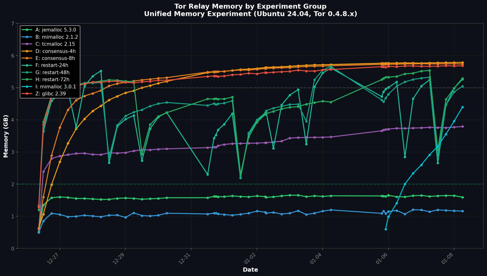

Over the past four months, we conducted extensive memory experiments across 100+ relay-days on high-bandwidth Tor relays running Ubuntu 24.04 with Tor 0.4.8.x. Our goal: understand why Guard relays on Linux consistently see memory "stick" at 5–6 GB after ~48 hours—and how to fix it.
MaxMemInQueues don't fix this. Disabling DirCache works but disqualifies you as a Guard| Approach | Result | Viable? |
|---|---|---|
| mimalloc 2.1.2 | 1.16 GB (80% ↓) | ✅ Yes |
| jemalloc 5.3.0 | 1.59 GB (72% ↓) | ✅ Yes |
| tcmalloc 2.15 | 3.79 GB (33% ↓) | ⚠️ Partial |
| mimalloc 3.0.1 | 4.39 GB (23% ↓) | ⚠️ Partial |
| DirCache 0 | 0.29 GB (94% ↓) | ❌ Loses Guard |
| MaxMemInQueues | ~5 GB (no change) | ❌ No |
| MaxConsensusAgeForDiffs | ~5.7 GB (no change) | ❌ No |
| Periodic restarts | 5.0-5.3 GB (minimal) | ⚠️ Workaround only |
| glibc 2.39 (control) | 5.68 GB |

The chart shows the stark difference: glibc 2.39 groups (D, E, Z) plateau at 5–6 GB while mimalloc 2.1.2 (B) and jemalloc 5.3.0 (A) stay under 2 GB. This isn't a gradual leak—it's a sudden expansion around Day 2 that never recovers under glibc.
For operators running Guard relays on Ubuntu 24.04, move away from the default allocator. Switching to mimalloc or jemalloc reduced our memory footprint by 70–80% without any loss in performance, stability, or Guard status.
# Ubuntu 24.04 - Quick deploy
sudo apt install libmimalloc2.0 # mimalloc 2.1.2
sudo systemctl edit tor@relay_name
# Add: Environment="LD_PRELOAD=/usr/lib/x86_64-linux-gnu/libmimalloc.so.2"With this single change, you can run more relays on the same hardware—capacity you can reinvest in the network.
📊 Raw data: View experiment data and relay configs on GitHub